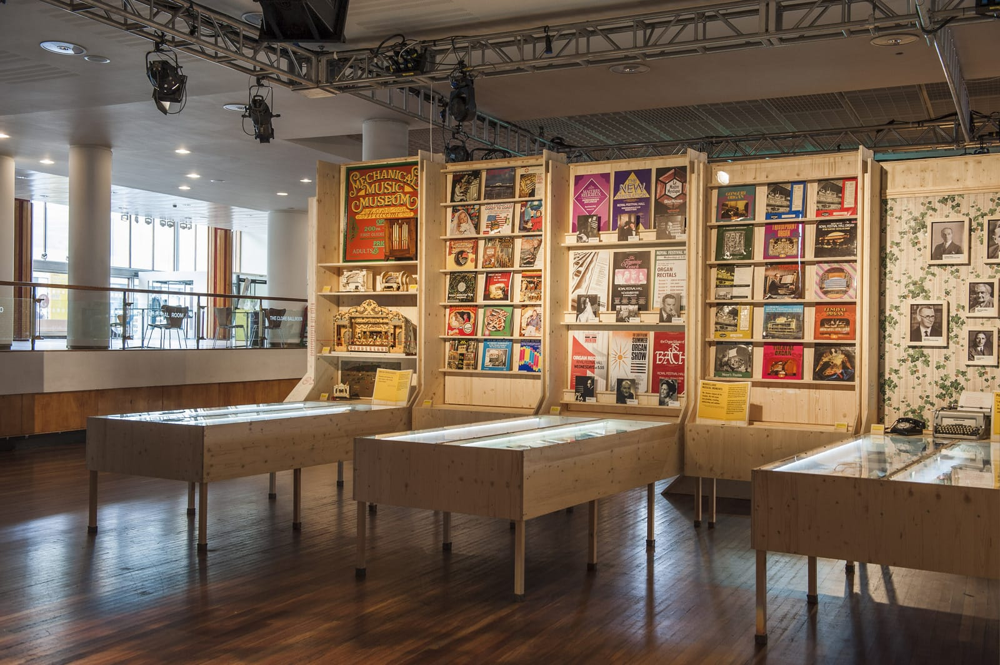

I worked alongside Manalo & White to manufacture the display cabinets, furniture and central video/sound booth for the exhibition celebrating pipe organs and the re-building of the Royal Festival Hall Organ which was shown in the Clore ballroom in Spring 2014.
Having built up a strong working relationship with M&W we worked together detailing and refining the units in the early stages of production, creating units which required minimal assembley on site and were not dwarfed by the size of the Clore ballroom.
